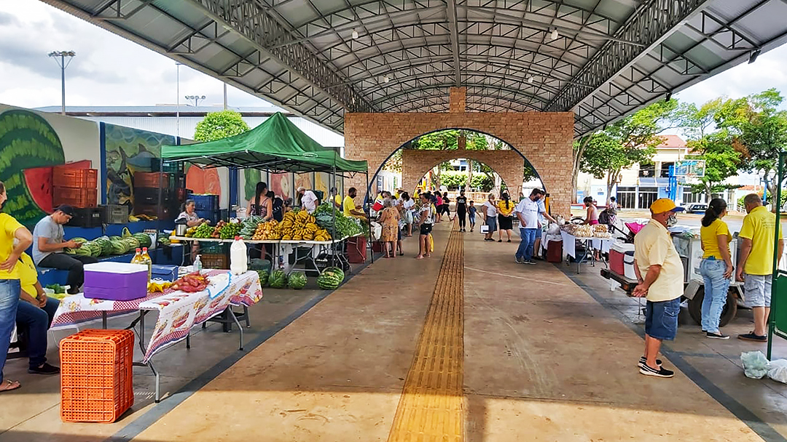

O Impacto das Feiras de Produtos Agrícolas na Economia Local e na Sustentabilidade
As feiras de produtos agrícolas desempenham um papel significativo na comercialização e divulgação de produtos agrícolas. Eles fornecem um mercado direto para os agricultores exibirem e venderem suas mercadorias, sem necessidade de intermediários, o que geralmente resulta em margens de lucro aprimoradas. Adicionalmente, eles ajudam na disseminação da informação e da mudança de e para o agricultor, o que, por sua vez, ajuda a fortalecer a economia local e a promover a produção sustentável de produtos agrícolas. Para o lado do consumidor, os mercados são a principal fonte de produtos frescos de alta qualidade, muitas vezes orgânicos, que vêm diretamente dos agricultores. O fato de a transação ocorrer diretamente do agricultor para o consumidor também ajuda a fortalecer a confiança e transparência nas transações, melhorando assim a importância da agricultura local e impulsionando o desenvolvimento das zonas rurais.
